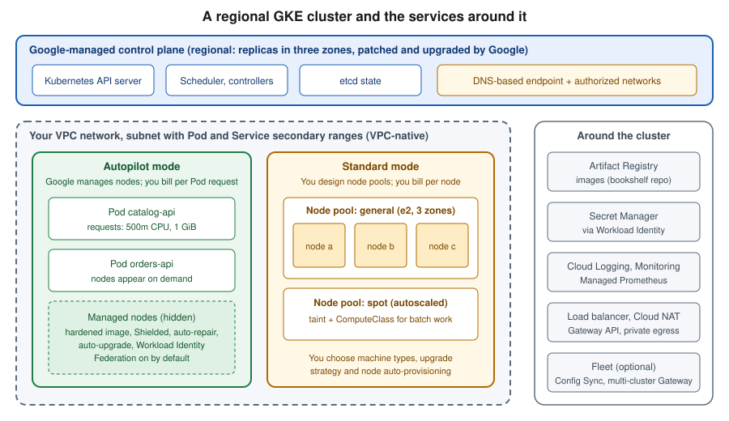

GKE Clusters
|
This content was generated with the assistance of AI and should be verified against the official documentation before being relied on in production. |
This page covers Google Kubernetes Engine (GKE) as a managed Kubernetes platform: how a cluster is built, how to choose between Autopilot and Standard mode, how to create a cluster from the console and the gcloud CLI, how nodes, upgrades and networking are managed, how Pods get Google Cloud permissions without keys, and what a cluster costs. Generic Kubernetes concepts (Pods, Deployments, Services, RBAC, probes) are not repeated here; they live in the Kubernetes section of this site, and this page links to the matching pages where GKE adds something specific.
Versions and behaviour were checked against the live documentation on 2026-09-30: the gcloud CLI is on the 586.x line,
new clusters are enrolled in the Regular release channel by default, and at the time of checking the Regular and Stable
channels offered Kubernetes 1.35 while the Rapid channel was ahead of them (1.36 as the default with 1.37 becoming
available). Channel contents change every few weeks, so always ask the service (gcloud container get-server-config)
instead of copying a version number from a page. The Bookshelf cluster bookshelf-gke runs the catalog-api,
orders-api and notifier workloads; my-project-id, <project-number> and the region us-central1 are
placeholders. Deploying the Bookshelf workloads, exposing them with the Gateway API and autoscaling Pods is the subject
of Deploying Microservices on GKE; this page stops at a healthy, secure, upgradable cluster.
GKE architecture
A GKE cluster has two halves:
-
The control plane (Kubernetes API server, scheduler, controllers and the state database) is run, scaled, patched and upgraded by Google. In a zonal cluster it runs in one zone; in a regional cluster it is replicated across three zones of the region. You never see its machines; you reach it through an endpoint.
-
The data plane (the nodes that run Pods) runs as Compute Engine VMs in your project and your VPC network. How much of it Google operates for you depends on the mode you choose (next section).

Around the cluster sit services described on other pages: images come from Artifact Registry (Container Registry and Builds), Pods reach Google Cloud APIs through Workload Identity Federation for GKE (below and Identity and Access), secrets come from Secret Manager (Secret Manager and Cloud KMS), traffic enters through Cloud Load Balancing (Load Balancing and Cloud Armor) and the network itself is described in VPC Networking on Google Cloud. For where GKE sits among the compute services see Choosing a Compute Service; Cloud Run is the cluster-free alternative (Cloud Run).
The same split exists on the other two clouds; see EKS Clusters and AKS Clusters for the counterparts, and Managed Kubernetes & Distributions for how managed offerings compare.
Autopilot vs. Standard
GKE has a single product with two modes of operation. Older guides, and the Anthos-era documentation, describe GKE Enterprise as a separate tier; since 2025-09-02 the former GKE Enterprise features (fleets, Teams, Config Sync, Policy Controller, Connect Gateway) are part of GKE at no extra charge, and since 2025-09-23 clusters no longer carry a tier.
| Aspect | Autopilot | Standard |
|---|---|---|
Node management |
Google provisions, scales, repairs and upgrades nodes; you never touch node pools |
You create and size node pools, choose machine types, and decide upgrade strategy |
Billing unit |
The CPU, memory and ephemeral storage that your Pods request (plus a cluster management fee) |
The nodes you run, whether or not Pods fill them (plus the cluster management fee) |
Pod resource requests |
Required; Autopilot rounds them to supported values |
Optional but strongly recommended |
Security defaults |
Hardened baseline: Shielded nodes, Workload Identity Federation for GKE on, restrictions on privileged Pods and host access |
Mostly opt-in; you choose which hardening to enable |
Customisation |
ComputeClasses select hardware (GPUs, Spot, specific machine series) per workload |
Any machine type, custom images, DaemonSets with host access, privileged workloads |
Typical use |
New workloads, teams without a platform group, variable load |
Workloads needing node-level control, special kernels, fixed capacity discounts |
Autopilot is the recommended default for new clusters. Standard remains the choice when a workload truly needs privileged containers, specific node images or full control over scheduling.
The line between the modes is no longer all-or-nothing. Since 2025-09 the Autopilot-style built-in ComputeClasses
(autopilot and autopilot-spot) can also run in qualifying Standard clusters, so a Standard cluster can host
workloads that are billed per Pod and operated by Google next to the node pools you manage yourself. Custom
ComputeClasses and node auto-provisioning (covered in the node pool section) let a Standard cluster create node pools
on demand for a given class.
Bookshelf uses Autopilot: catalog-api, orders-api and notifier are stateless services with modest, predictable
requests, and the project has no platform team to patch nodes. Because Autopilot is the path of least effort and the
recommended one, the walkthroughs below start there and then show a Standard cluster with explicit flags.
Zonal vs. regional clusters
A cluster is created in a location, which is either a zone or a region.
- Zonal cluster
-
The control plane runs in one zone. Nodes run in that zone by default, and can be spread to extra zones of the same region. A control-plane upgrade or a zone outage makes the Kubernetes API unavailable (running Pods keep running, but you cannot change anything). It is the cheapest layout and fine for development.
- Regional cluster
-
The control plane is replicated across three zones, and nodes are spread over three zones by default. The API stays available during a control-plane upgrade and when a single zone fails, and this is the layout Google recommends for production. Node counts are per zone: asking for two nodes in a regional Standard node pool creates two nodes in each of three zones, six in total.
Autopilot clusters are always regional. Remember that a regional layout costs more in Standard mode (more nodes) and adds cross-zone network traffic, which is billed; topology-aware routing and zone-aware scheduling reduce it. The terminology of regions and zones is in Google Cloud Global Infrastructure.
Creating a cluster
Prerequisites for both paths: a project with billing enabled, the Kubernetes Engine API enabled, and an IAM role such
as Kubernetes Engine Admin (roles/container.admin) on the project for the person creating the cluster. The nodes need
a service account; the Compute Engine default service account works but is over-privileged, so create a dedicated one
with the Default Kubernetes Engine node service account role.
In the Google Cloud console
-
Open the project picker and select the project, or open Cloud Shell, which already has
gcloudandkubectl. -
Open Kubernetes Engine > Clusters and, if prompted, enable the Kubernetes Engine API.
-
Choose Create. The default is an Autopilot cluster; select Switch to Standard cluster only if you need the Standard mode.
-
Enter the name
bookshelf-gkeand the regionus-central1. -
In the Networking section choose the VPC network and subnet, the control-plane access (DNS-based endpoint on, authorized networks as needed) and whether nodes are private.
-
In Advanced settings review the release channel (Regular by default), maintenance window and the node service account.
-
Choose Create and wait for the cluster to show a green tick.
With the gcloud CLI
PROJECT_ID=$(gcloud config get-value project)
REGION=us-central1
CLUSTER=bookshelf-gke
gcloud services enable container.googleapis.com artifactregistry.googleapis.com
# Dedicated node service account with minimal roles
gcloud iam service-accounts create gke-nodes --display-name="GKE node service account"
NODE_SA="gke-nodes@${PROJECT_ID}.iam.gserviceaccount.com"
for ROLE in roles/container.defaultNodeServiceAccount roles/artifactregistry.reader; do
gcloud projects add-iam-policy-binding "$PROJECT_ID" \
--member="serviceAccount:${NODE_SA}" --role="$ROLE" --condition=None
done
# Recommended path: an Autopilot cluster on the Regular channel
gcloud container clusters create-auto "$CLUSTER" \
--location="$REGION" \
--release-channel=regular \
--service-account="$NODE_SA"A Standard cluster with explicit options, useful when the node layout matters:
gcloud container clusters create bookshelf-std \
--location="$REGION" \
--release-channel=regular \
--num-nodes=1 \
--machine-type=e2-standard-4 \
--enable-ip-alias \
--enable-dataplane-v2 \
--enable-autoscaling --min-nodes=1 --max-nodes=3 \
--workload-pool="${PROJECT_ID}.svc.id.goog" \
--service-account="$NODE_SA"Here --num-nodes is per zone (so a regional cluster starts with three nodes), --enable-ip-alias makes the cluster
VPC-native (the default today), --enable-dataplane-v2 selects the eBPF-based Dataplane V2 networking that provides
Kubernetes NetworkPolicy enforcement, and --workload-pool turns on Workload Identity Federation for GKE (Autopilot
does this for you). Reference:
Create a regional cluster |
gcloud container clusters create.
Connecting with kubectl
kubectl authenticates to GKE through the gke-gcloud-auth-plugin credential plugin, which replaced the authentication
code that used to be built into kubectl. Install it with gcloud components install gke-gcloud-auth-plugin (or
through the OS package manager if gcloud was installed that way), then fetch credentials, which write a context into
~/.kube/config:
gcloud container clusters get-credentials "$CLUSTER" --location="$REGION"
kubectl get nodes
kubectl cluster-infoWith an Autopilot cluster, kubectl get nodes shows only the nodes needed by your Pods and is empty for a fresh
cluster; this is normal. For kubectl itself see the kubectl
Essentials page.
Terraform
resource "google_container_cluster" "bookshelf" {
name = "bookshelf-gke"
location = "us-central1"
enable_autopilot = true
deletion_protection = true
release_channel {
channel = "REGULAR"
}
}google_container_cluster (the provider and state are explained in Infrastructure as Code).
Release channels and versions
A release channel decides which Kubernetes versions a cluster may use and when GKE upgrades it. The four channels trade freshness for stability:
| Channel | Intended use | Behaviour |
|---|---|---|
Rapid |
Pre-production, early access to new features |
New minor versions arrive 1-2 weeks after upstream Kubernetes; short support window |
Regular (default) |
Most production clusters |
Minor versions arrive roughly two months after Rapid, after soak time |
Stable |
Workloads that value stability over features |
Minor versions arrive roughly three to four months after Regular |
Extended |
Teams that cannot move versions every few months |
A minor version can stay supported for up to 24 months, with extra cost during the extended period |
Standard support for a minor version lasts about 14 months. Patch versions become available at least a week before they become auto-upgrade targets, and new minor versions reach auto-upgrade between four and eight weeks after they appear in a channel. Security patches are delivered to every channel. Clusters not enrolled in any channel are deprecated: the documentation announces their removal on 2027-06-14, so enrol older clusters in a channel.
List what each channel currently offers and the default version:
gcloud container get-server-config --location="$REGION" \
--format="yaml(channels)"Switch a cluster between channels with gcloud container clusters update "$CLUSTER" --location="$REGION"
--release-channel=stable; moving to a channel whose versions are older than the current one is not allowed until the
channel catches up. The release notes are the authority on dated changes, including retirements of old Kubernetes
versions and removed APIs.
Node pools and resizing
In Standard mode, nodes are grouped into node pools: sets of identical VMs managed as a Compute Engine managed instance group. A cluster has at least one pool, and different workloads can use different pools (a general pool, a Spot pool for batch work, a GPU pool). Autopilot has no node pools you manage, so this section applies to Standard clusters.
In the Google Cloud console
-
Open Kubernetes Engine > Clusters and select the Standard cluster.
-
Open the Nodes tab and choose Add node pool.
-
Set the name, number of nodes, autoscaling range, machine type, boot disk and (optionally) Enable Spot VMs.
-
Under Node pool upgrade choose surge or blue-green upgrade settings.
-
Choose Create.
-
To resize an existing pool, open the pool, choose Resize and enter the new node count; for autoscaling, edit the pool and set the minimum and maximum.
With the gcloud CLI
CLUSTER=bookshelf-std
# A Spot pool that autoscales between 0 and 5 nodes per zone and is tainted for batch workloads
gcloud container node-pools create spot-batch \
--cluster="$CLUSTER" --location="$REGION" \
--machine-type=e2-standard-4 \
--spot \
--enable-autoscaling --min-nodes=0 --max-nodes=5 \
--node-taints=workload=batch:NoSchedule
# Resize a fixed-size pool (nodes per zone in a regional cluster)
gcloud container clusters resize "$CLUSTER" \
--node-pool=default-pool --num-nodes=2 --location="$REGION"
# Turn the cluster autoscaler on for an existing pool
gcloud container node-pools update default-pool \
--cluster="$CLUSTER" --location="$REGION" \
--enable-autoscaling --min-nodes=1 --max-nodes=4Resizing a node pool changes only the node count; changing the machine type or boot disk of an existing pool is done by creating a new pool, cordoning and draining the old one, and deleting it (or by using a node-pool upgrade that changes the node configuration). Autoscaling needs Pods with resource requests, since the autoscaler adds nodes when Pods are unschedulable and removes nodes that are mostly idle. The Pod-level mechanisms (Horizontal and Vertical Pod Autoscalers, PodDisruptionBudgets) are covered by Autoscaling and Scheduling and Disruptions.
Node auto-provisioning and ComputeClasses
Maintaining a pool per hardware shape is work. With node auto-provisioning, a Standard cluster creates and deletes
node pools itself to fit pending Pods, within resource limits you set. ComputeClasses are Kubernetes custom resources
that describe a prioritised list of hardware preferences (machine family, Spot first with on-demand fallback, GPUs); a
Pod selects one with a node selector on cloud.google.com/compute-class. Autopilot uses the same mechanism under the
hood, which is why a ComputeClass such as autopilot-spot can be requested from either mode.
apiVersion: cloud.google.com/v1
kind: ComputeClass
metadata:
name: bookshelf-batch
spec:
priorities:
- machineFamily: n4
spot: true
- machineFamily: n4
spot: false
whenUnsatisfiable: ScaleUpAnyway
nodePoolAutoCreation:
enabled: trueUpgrades and maintenance windows
GKE upgrades the control plane first and then the nodes, each automatically within the release channel unless you restrict it. Autopilot clusters, and node pools with auto-upgrade enabled (the default), follow the channel; nothing needs to be done for routine patches.
Control what happens and when with:
- Maintenance windows
-
A recurring time range in which GKE may perform automatic upgrades and other maintenance. Outside it, automatic maintenance does not start (security-critical changes can still be applied).
- Maintenance exclusions
-
Date ranges in which upgrades are blocked, with a scope:
no_upgrades,no_minor_upgradesorno_minor_or_node_upgrades. Exclusions are for events such as a trading peak or a release freeze; the number and length of exclusions is limited so that clusters cannot be pinned forever. - Node upgrade strategies (Standard)
-
Surge upgrades replace nodes in a rolling fashion, controlled by
max-surge-upgradeandmax-unavailable-upgrade. Blue-green upgrades create a full replacement pool, keep the old one for a soak period and allow rollback, at the cost of temporarily doubling the nodes.
In the Google Cloud console
-
Open Kubernetes Engine > Clusters and select the cluster.
-
On the Details tab, find Maintenance under Automation and choose Edit.
-
Enable the maintenance window, choose the start time and recurrence, and add exclusions if needed.
-
For a node pool, open the pool and choose Edit to change its upgrade strategy.
With the gcloud CLI
# Weekly maintenance window: Saturdays and Sundays starting at 02:00 UTC for 8 hours
gcloud container clusters update "$CLUSTER" --location="$REGION" \
--maintenance-window-start=2026-10-03T02:00:00Z \
--maintenance-window-end=2026-10-03T10:00:00Z \
--maintenance-window-recurrence="FREQ=WEEKLY;BYDAY=SA,SU"
# Block minor-version upgrades during an end-of-year freeze
gcloud container clusters update "$CLUSTER" --location="$REGION" \
--add-maintenance-exclusion-name=year-end \
--add-maintenance-exclusion-start=2026-12-15T00:00:00Z \
--add-maintenance-exclusion-end=2027-01-05T00:00:00Z \
--add-maintenance-exclusion-scope=no_minor_upgrades
# Surge settings for a Standard node pool
gcloud container node-pools update default-pool \
--cluster="$CLUSTER" --location="$REGION" \
--max-surge-upgrade=2 --max-unavailable-upgrade=0
# Manual upgrade of the control plane to a version offered by the channel
gcloud container clusters upgrade "$CLUSTER" --location="$REGION" \
--master --cluster-version=VERSIONBefore a minor upgrade, GKE shows deprecation insights and recommendations for workloads that call Kubernetes APIs that the next version removes; check the Insights in the console or the release notes and fix manifests first. Make upgrades safe for workloads with probes, graceful shutdown and PodDisruptionBudgets (Health Probes and Container Lifecycle).
Networking and private clusters
New clusters are VPC-native: Pods get IP addresses from a secondary range of the subnet (an alias IP range), so Pods are routable inside the VPC without extra overlay. Plan the Pod and Service ranges generously; running out of Pod IPs is a common reason a cluster stops scaling. Dataplane V2 (the default for Autopilot) adds Kubernetes network policy enforcement and richer logging. Cluster networking concepts are in Cluster Networking, CNI and Service Mesh and VPC fundamentals in VPC Networking on Google Cloud.
Two independent choices define how exposed a cluster is:
- Private nodes
-
Nodes receive only internal IP addresses and cannot reach the internet directly. Add Cloud NAT (VPC Networking on Google Cloud) so Pods can pull public images or call external APIs, and enable Private Google Access so nodes still reach Google APIs. Autopilot and Standard both support private nodes; this is the recommended setting for production.
- Control-plane access
-
The control plane can be reached through a DNS-based endpoint, an IP-based endpoint, or both. The DNS-based endpoint is a stable fully qualified domain name that works from any network that can reach Google APIs, is protected by IAM and VPC Service Controls, and can be reached privately through Private Service Connect; it is what the documentation recommends using. IP-based endpoints can be external plus internal, or internal only, and should be limited with authorized networks (CIDR ranges allowed to connect).
Older guides describe "private clusters" as a distinct cluster type built on VPC peering with a /28 control-plane
range. That model is superseded: current clusters use Private Service Connect to attach the control plane to your VPC,
and private nodes plus a control-plane endpoint choice replace the old private-cluster flags. Legacy peering-based
clusters keep working but are not the model for new designs.
In the Google Cloud console
-
When creating the cluster, open Networking in the cluster form.
-
Choose the network and subnet, and under Access control plane using its DNS select Enable DNS-based endpoint.
-
Under IP-based access choose whether the external endpoint is enabled; add Authorized networks entries.
-
Select Enable private nodes (Pods and nodes get no external addresses).
With the gcloud CLI
gcloud container clusters create-auto bookshelf-private \
--location="$REGION" \
--release-channel=regular \
--enable-private-nodes \
--enable-dns-access \
--enable-master-authorized-networks \
--master-authorized-networks=203.0.113.0/24 \
--network=bookshelf-vpc --subnetwork=bookshelf-subnet
# Cloud NAT so that private nodes can reach the internet
gcloud compute routers create bookshelf-router --network=bookshelf-vpc --region="$REGION"
gcloud compute routers nats create bookshelf-nat --router=bookshelf-router --region="$REGION" \
--auto-allocate-nat-external-ips --nat-all-subnet-ip-rangesThe range 203.0.113.0/24 is a documentation-only range; replace it with your office or CI egress ranges.
Security
Defence in depth for a cluster combines Google Cloud IAM, Kubernetes RBAC and node and Pod hardening.
- IAM and RBAC
-
IAM roles such as
roles/container.viewerorroles/container.developerdecide who can reach the cluster API and which Kubernetes verbs they get through the built-in role mapping; Kubernetes RBAC adds finer per-namespace rules (see Objects and the Kubernetes API). Grant Google groups, not individuals, as described in Identity and Access. - Node service account
-
Give nodes a dedicated service account with only logging, monitoring and image-pull permissions, as in the creation example. A node service account with the Editor role means every Pod that can reach the metadata server inherits it.
- Shielded and Confidential nodes
-
Shielded GKE nodes (secure boot, integrity monitoring) are enabled by default; Confidential GKE nodes encrypt memory with supported machine types.
- Security posture and vulnerability scanning
-
The security posture dashboard evaluates workloads against the Pod Security Standards and scans workloads and nodes for known vulnerabilities and misconfigurations.
- Binary Authorization
-
Admission control that only allows images signed or attested by your pipeline, useful together with Artifact Registry and Cloud Build provenance.
- GKE Sandbox
-
gVisor-based isolation for untrusted workloads on Standard node pools.
- Secrets
-
Kubernetes Secrets are stored encrypted by default; application-layer encryption with a Cloud KMS key and the Secret Manager add-on (
--enable-secret-manager) keep secrets outside the cluster. The consumption patterns are on the Runtime Configuration page.
Workload Identity Federation for GKE
Applications in Pods must call Google Cloud APIs (Cloud Storage, Secret Manager, Pub/Sub) without a downloaded service account key. Older guides show a long-lived JSON key mounted as a Kubernetes Secret; that pattern is exactly what Workload Identity Federation for GKE replaces. (It was named "Workload Identity" before the Federation naming.)
How it works: each cluster with the feature enabled gets a workload identity pool, PROJECT_ID.svc.id.goog. A Pod
running as a Kubernetes ServiceAccount is identified in IAM as a principal built from the project number, the pool,
the namespace and the ServiceAccount name. The client library’s Application Default Credentials flow asks the GKE
metadata server for a token for that identity; no key exists anywhere.
Enablement: it is on by default for Autopilot clusters. For Standard clusters set --workload-pool at creation (or
update an existing cluster) and enable the GKE metadata server on node pools with --workload-metadata=GKE_METADATA.
There are two ways to grant access:
- Direct resource access (recommended)
-
Grant the IAM role directly to the Kubernetes ServiceAccount principal. No Google service account is needed. Not every Google Cloud API supports federated principals; the documentation lists the exceptions.
- Service account impersonation
-
Bind the Kubernetes ServiceAccount to a Google service account with
roles/iam.workloadIdentityUser, annotate the ServiceAccount with the Google service account email, and grant roles to that Google service account. Needed for APIs that do not accept federated principals, or when you want one identity shared with non-GKE workloads.
Bookshelf’s catalog-api needs to read the catalog-db-password secret:
PROJECT_NUMBER=$(gcloud projects describe "$PROJECT_ID" --format="value(projectNumber)")
NAMESPACE=bookshelf
KSA=catalog-api
kubectl create namespace "$NAMESPACE"
kubectl create serviceaccount "$KSA" --namespace "$NAMESPACE"
gcloud secrets add-iam-policy-binding catalog-db-password \
--role=roles/secretmanager.secretAccessor \
--member="principal://iam.googleapis.com/projects/${PROJECT_NUMBER}/locations/global/workloadIdentityPools/${PROJECT_ID}.svc.id.goog/subject/ns/${NAMESPACE}/sa/${KSA}"The Deployment then sets serviceAccountName: catalog-api and the application uses ADC with no extra configuration. To
grant a role to every ServiceAccount in a namespace, use the principalSet:// form ending in /namespace/NAMESPACE.
Reference:
Authenticate to Google Cloud APIs from GKE workloads |
About Workload Identity Federation for GKE.
In the console, the same binding is made from IAM & Admin > IAM (grant the role to the principal URL) or from the resource’s own permissions panel, for example Secret Manager > catalog-db-password > Permissions. For the Java client code that consumes the identity see Identity and Access. The metadata server accepts at most 500 concurrent connections per node, so very chatty clients can see HTTP 499 errors; cache credentials in the client library rather than creating a client per request.
Fleets and multi-cluster Gateway
A fleet is a logical grouping of clusters (GKE, attached or on-premises) managed together. Clusters created with
--fleet-project are registered at creation; existing clusters can be registered afterwards. Features that apply across a fleet,
all included in GKE since 2025-09-02, are:
-
Config Sync: GitOps for Kubernetes configuration from a Git repository or OCI image, applied to many clusters.
-
Policy Controller: policy constraints (Gatekeeper-based) evaluated on every cluster.
-
Connect Gateway: reach private clusters' APIs through a Google-hosted gateway using IAM.
-
Teams and namespaces across clusters, plus Cloud Service Mesh for service-to-service traffic and mTLS.
Multi-cluster Gateway routes user traffic to workloads in several clusters through one load balancer, for example to
serve users from the nearest region or to fail over between regions. It is the documented successor to Multi Cluster
Ingress, which older guides describe as an "Anthos" or "GKE Hub" feature. A config cluster holds the Gateway and
HTTPRoute resources; ServiceExport and ServiceImport resources expose Services across clusters; the multi-cluster
GatewayClasses carry an -mc suffix, for example gke-l7-global-external-managed-mc.
gcloud services enable gkehub.googleapis.com multiclusterservicediscovery.googleapis.com \
multiclusteringress.googleapis.com trafficdirector.googleapis.com
gcloud container clusters update "$CLUSTER" --location="$REGION" --fleet-project="$PROJECT_ID"
gcloud container fleet memberships list
gcloud container fleet multi-cluster-services enable
gcloud container fleet ingress enable \
--config-membership="projects/${PROJECT_ID}/locations/${REGION}/memberships/${CLUSTER}"The Gateway and HTTPRoute resources themselves are explained, for single clusters, in Deploying Microservices on GKE, and generically in Gateway API. Bookshelf needs a single region, so a fleet is optional for it; add one when you run more than one cluster.
Operations
- Logging and monitoring
-
System and workload logs go to Cloud Logging and cluster metrics to Cloud Monitoring by default; the Observability tab of a cluster shows them. See Monitoring and Observability.
- Managed Service for Prometheus
-
Managed collection is on by default for new Autopilot clusters (1.25 and later) and Standard clusters (1.27 and later). Scrape application metrics with a
PodMonitoringresource and query them with PromQL in Cloud Monitoring:
apiVersion: monitoring.googleapis.com/v1
kind: PodMonitoring
metadata:
name: catalog-api
namespace: bookshelf
spec:
selector:
matchLabels:
app: catalog-api
endpoints:
- port: metrics
path: /actuator/prometheus
interval: 30sManaged Service for Prometheus ;
for the Prometheus data model and query language see the Containers & Kubernetes monitoring
page, and Metrics and Observability: Micrometer, Actuator, and Distributed Tracing for exposing the /actuator/prometheus endpoint.
- Backup for GKE
-
A managed service that backs up cluster configuration and volume data to Google-managed storage on a schedule, and restores into the same or another cluster. Enable it per cluster and create a backup plan; it is the recommended protection for stateful workloads and for cluster migration. Backup for GKE
- Cost visibility
-
Enable GKE cost allocation to attribute spend to namespaces and labels in the billing export (Cost Management and Billing).
Pricing model
GKE bills a mix of cluster fees and the resources the cluster uses. This section describes the structure only; prices change and differ by region, so always read the dated pricing page and the Google Cloud pricing calculator.
-
Cluster management fee. A per-cluster, per-hour fee applies to every cluster (Autopilot and Standard), with a monthly free-tier credit applied to a billing account that covers the fee of one zonal Standard cluster or one Autopilot cluster. A second or later cluster pays the fee in full, so many small clusters cost more than namespaces inside one cluster.
-
Autopilot compute. Billed per second for the CPU, memory and ephemeral storage that Pods request (with the Spot and accelerator variants billed at their own rates). Idle node capacity is Google’s problem; over-requested resources are yours.
-
Standard compute. Billed as the Compute Engine VMs and disks in your node pools, per second, with the usual discounts: Spot VMs, sustained and committed use discounts. Unused node capacity is billed.
-
Extended support. Clusters kept on the Extended channel past the end of standard support pay an additional per-cluster charge for the extended period.
-
Everything else. Load balancers, network egress and inter-zone traffic, persistent disks and snapshots, Cloud NAT, logging and monitoring ingestion, Backup for GKE storage and Artifact Registry storage are billed as their own services.
Cost levers: choose Autopilot to avoid paying for idle nodes, right-size Pod requests, use Spot capacity for fault-tolerant work, limit autoscaling maxima, delete idle dev clusters, and prefer one cluster with namespaces per environment to many clusters. Quotas and limits that most often matter are the number of nodes per cluster, Pods per node, IP ranges, and regional Compute Engine quotas (CPUs, in-use IP addresses); the console IAM & Admin > Quotas page shows each.
Troubleshooting
| Symptom | Likely cause | What to check |
|---|---|---|
|
The credential plugin is missing or not on |
Install it with |
|
Authorized networks exclude your IP, or only the internal endpoint exists |
Cluster Networking settings; use the DNS-based endpoint; check VPN or Cloud Shell path |
Pod stays |
Requests exceed what Autopilot supports, quota exhausted, or no capacity in a zone |
|
Pod |
Node pool too small or autoscaling max reached |
Resize the pool or raise |
|
Image path wrong or node service account lacks Artifact Registry Reader; private nodes without Cloud NAT or Private Google Access |
Describe the Pod; check IAM of the node service account and egress path |
Pod gets |
Wrong principal, Workload Identity Federation not enabled, or role granted on the wrong resource |
Compare the |
Pod gets HTTP 499 or token timeouts |
More than 500 concurrent connections to the metadata server on one node |
Cache credentials; reuse clients |
Upgrade does not happen, or workload broke after upgrade |
Maintenance exclusion, PodDisruptionBudget blocking drain, removed Kubernetes API |
Cluster Notifications and Insights; fix manifests; check PodDisruptionBudgets |
Cluster cannot add nodes |
Pod IP range exhausted, regional quota reached, or subnet full |
Cluster networking ranges; IAM & Admin > Quotas; add a Pod range |
Large unexpected bill |
Idle Standard nodes, many clusters, egress, logging volume |
Billing reports by SKU; GKE cost allocation; exclusion filters on logs |
Useful commands: kubectl describe pod, kubectl get events --sort-by=.lastTimestamp,
gcloud container operations list --location="$REGION" for long-running cluster operations, and the Cloud Logging
queries for the k8s_cluster and k8s_container resource types. The generic Pod failure modes (CrashLoopBackOff,
OOMKilled, probe failures) are explained in Pods and
Health Probes and Container Lifecycle.
Clean up
Delete in dependency order. Workloads that created load balancers, forwarding rules or persistent disks (Services of type LoadBalancer, Gateways, PersistentVolumeClaims) must be deleted first, otherwise those resources can remain and keep billing after the cluster is gone.
kubectl delete gateway,httproute,service,deployment --all --namespace bookshelf
kubectl delete pvc --all --namespace bookshelf
gcloud container node-pools delete spot-batch --cluster=bookshelf-std --location="$REGION" --quiet
gcloud container clusters delete bookshelf-std --location="$REGION" --quiet
gcloud container clusters delete bookshelf-private --location="$REGION" --quiet
gcloud container clusters delete bookshelf-gke --location="$REGION" --quiet
gcloud compute routers nats delete bookshelf-nat --router=bookshelf-router --region="$REGION" --quiet
gcloud compute routers delete bookshelf-router --region="$REGION" --quiet
gcloud iam service-accounts delete "gke-nodes@${PROJECT_ID}.iam.gserviceaccount.com" --quiet
# Check for leftovers
gcloud compute disks list
gcloud compute forwarding-rules listClusters created with Terraform and deletion_protection = true must have it turned off and applied before
terraform destroy works. Backups created by Backup for GKE live in backup plans that must be deleted separately. When
the whole experiment lives in a throwaway project, deleting the project removes everything (it is retained for 30 days
before permanent deletion). Reference:
Delete a cluster.
Related pages
-
GKE Microservices: deploying Bookshelf, Gateway API, IAP, autoscaling